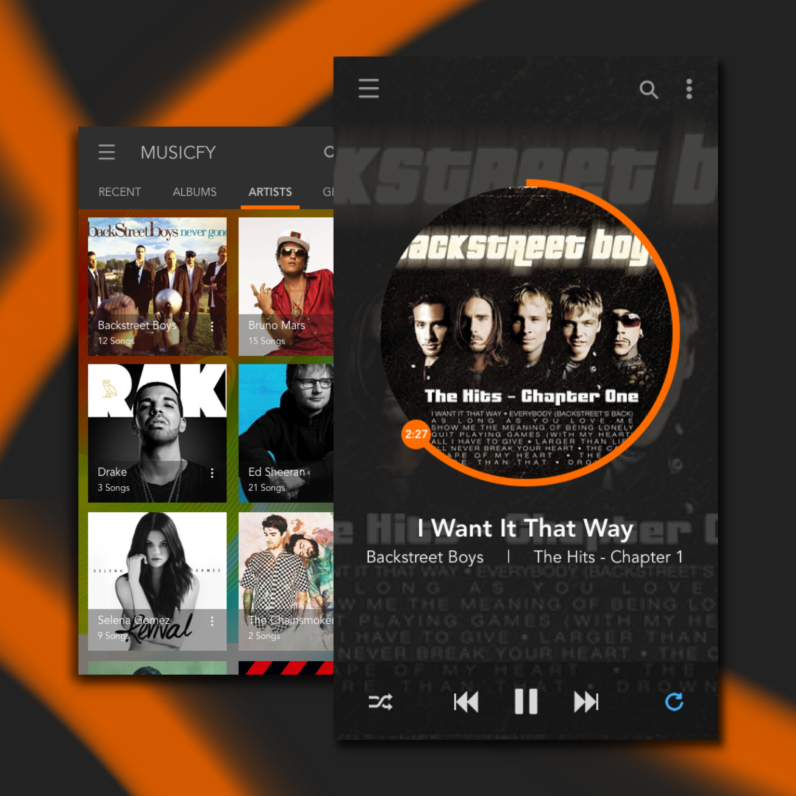

Day 50 - Musicfy
I challenged myself today to create a personalized music app from various inspirations off of Google. This app is mainly self-designed, meaning that whoever uses this app is very similiar to my tastes, in terms of how they want their music app to look/feel like. This will be explained below.
First, I created the homepage, where it lists the different categories. I placed "Recent" as the first category because I usually like to listen to the same songs quite a while. However, there will also be a choice to only listen to Albums, Artists, Genres, and Playlists (not shown) only.
As for the song, I've given the user the choice to click into the album and the artist. My main design problem I had was the placement of the song duration/time. I decided to put the duration of the song along the border of the picture, because not only it's more creative, but it allows the user to see how far they are within the song easier. I have chosen this design idea over the generic horizontal time because the circular outline bar is more lengthy, which allows the user to move to different areas of the song easier. However, the time is on the circle, so if the user decides to press on the circle, the time will be hidden. So in order to remove that problem, I recommend having speech balloon that appears over the user's touch area, so the user will be able to see the adjusted time.
There are many design questions within this app, and it really revolves around what kind of user you are. Like I've said, this is a self-design, which only works for the audience who are similar to me. At this current state, this design is more definitely focused more on creativity than usability, but hopefully I've tackled some usability issues that can be solved within interaction design.